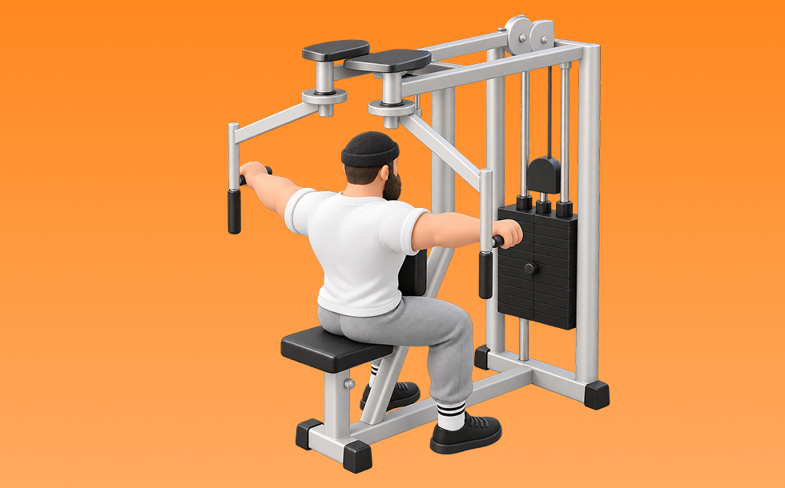

リアデルトマシン

リアデルトマシンとは、マシンを使って「引く」動作で肩後部（三角筋後部）、上背部を鍛える種目です。軌道が安定して狙った部位に効かせやすいのが特徴で、反動を抑えてコントロールしながら反復します。姿勢改善や肩の安定性向上が期待できます。
- 対象部位
- 肩
- 器具
- マシン
- 記録形式
- 重量・回数
- 別名
- リアデルトフライマシン
YouTube動画
-
【マシン】リアデルト【使い方】
-
【肩の筋トレ】リアデルトマシンの効果的な使い方～丸い肩、美しい背中づくりにおすすめ～
-
【筋トレ悪いフォーム解説】リアデルトフライでよくある間違い解説！三角筋後部狙いはこう鍛える！
-
三角筋後部筋トレの定番『マシンリアデルトフライ(ペックデッキ)』をわかりやすく解説！
-
【リアデルトマシン 僧帽筋】part2 肩より背中メインのやり方
-
エニタイムフィットネス三田 ペクトラルフライ・リアデルトイド マニュアル
-
【筋トレ】エニタイムスタッフが教えるリアデルトフライ！！！
-
【SHUA】リアデルト
-
【マシン説明】リアデルトマシン解説
-
リアデルト
-
【リアデルト】の使い方 ＜肩＞ ●上半身の立体感・姿勢改善
-
【リアデルトマシン 肩メイン】part1 ちょっとした調整で効き方全然変わる肩マシン @healthunionoda506
-
ペックフライ/リアデルトの使い方 ONI GYM 24 マシンの使い方 初心者向け 鬼ジム
-
リア・デルトイド（トレーニング動画）
-
【肩トレ】効かせにくい肩のリア（後部）にしっかりと刺激を与えるトレーニング！新種目も登場します
-
【三角筋後部】ケーブルリアデルトフライで肩裏を鍛える！背中の迫力を出すにもおすすめの種目◎
YouTubeショート
-
リアデルトってどう使ったらいいの？#フィットネス #ジム #筋トレ #ダイエット #マッスル #エクササイズ #ボクササイズ #サンドバッグ 24時間ジム #筋肉 #リアデルト#筋トレ女子
-
99%が間違えるリアデルトフライのやり方 #筋トレ #肩トレ #筋トレ初心者 #fitness #ジム #バズれ #shorts
-
肩のリアを鍛える時の椅子の高さ
-
肩トレのやり方🔥 〜リアに効かせるトレーニング基礎編〜 #筋トレ #筋肉社長 #筋肉 #肩トレ
-
ペックフライのフォームについてです✨
-
リアデルト（Rear Delt）リアデルトイドマシンの使い方～やり方と基本フォーム
-
リアデルトの使い方
-
肩のリアは胸をつけて動作しろ
-
【肩】リアデルトフライ #shorts #持田教利 #肩トレ
-
【両店共通】リアデルト 使い方動画
-
最大ストレッチと収縮はケーブル一択
-
【筋トレ】ペックフライのやり方＃筋トレ＃筋肉＃ペックフライ＃胸トレ#chesttraining g
-
【筋トレ】大胸筋が急成長！ペックフライの正しいやり方
-
リアレイズのやり方#ジム #初心者 #ダンベル
-
リアデルトマシン肩甲骨と腕の動きがポイント
-
持田選手の教える怪我をしないためのリアレイズがこちら！！#トレーニング #筋トレ #volix #fitness #workout #肩トレ #リアレイズ
-
横川くんから学ぶ肩トレ💪 ※最後の2種目はケーブルの引き方が違います（効いている部位について名言はされていませんでしたので予測です）
-
めっちゃ肩がデカくなった今やってるメニュー！#shorts
-
ペックフライの使い方これで合ってる！？ #フィットネスジム #ジム #筋トレ #ダイエット #マッスル #エクササイズ #ボクササイズ #24時間ジム #ペックフライ
-
【SGIR】ペックフライ意識すること
-
正しいダンベルロウ4つのポイント #筋トレ
-
【ダンベル】背中トレ4選 #筋トレ
-
持田選手とディーサンにペックフライについてレクチャーしていてもらいました！次はどの種目の解説をやってほしいかコメントしてね！#筋トレ #volix #トレーニング #fitness #ちょこっと惜しい
-
正しいサイドレイズ4つのポイント #筋トレ
-
【ダンベル】肩トレ3選 #筋トレ
-
正しい懸垂5つのポイント【筋トレ】
-
肩トレこの3種類で十分やと思うねんけど、マッチョ警察の方々どう思う？
-
【30秒でわかる】リアレイズ解説
-
持田選手に肩を大きくするためのフェイスプルについてレクチャーしていてもらいました！次はどの種目の解説をやってほしいかコメントしてね！#筋トレ #volix #トレーニング #肩トレ#三角筋
-
肩トレのやり方🔥〜インクラインサイドレイズ基礎編〜 #筋トレ #筋肉 #筋肉社長 #マッチョ #肩トレ
-
【溝口店】ペックフライ＆リアデルトマシン（胸と肩の後ろの筋肉）
-
正しいショルダープレス4つのポイント #筋トレ
動作方法
- 体幹を安定させ、背中が丸まらない姿勢を作る
- 肘を後方へ引き、肩甲骨を寄せる
- 勢いを使わず、ゆっくり戻す
動作ポイント
- 背中を丸めない
- 首に力を入れすぎない
- 戻しを速くしすぎない
ワンポイントアドバイス
- 重量よりも肩の軌道を安定させる
- 首まわりの力みを減らして行う
目的別回数設定
目的や体力に応じた一般的な目安です。無理のない範囲で調整してください。
- 筋力アップ
- 1〜5回
- 筋肥大
- 6〜12回
- 持久力アップ
- 13〜20回
YouTube動画について
動画はYouTubeの公開情報をもとに表示しています。内容は投稿者によるもので、Biggrによる監修ではありません。
アプリを入手
筋トレやトレーニングの記録はBiggrにお任せください。今すぐ無料で使い始められます。